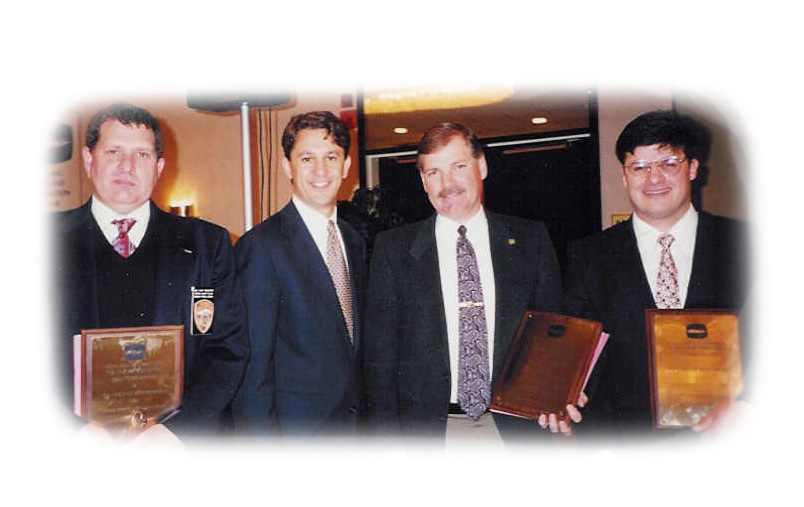
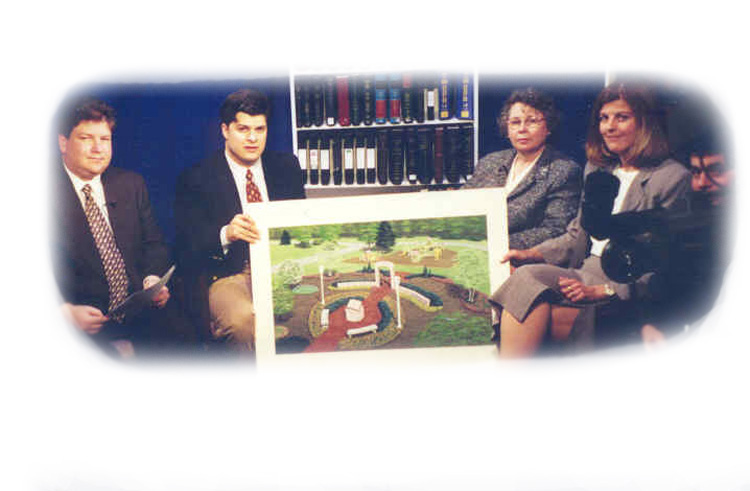
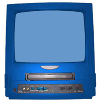

PRMG's Digital Video Production Services
View PRMG Overview Video
View John Zaher, President, Bio Video
View Terence Dollard, Vice President, Digital Video Production Services Divsion,
Bio
View Client Video Samples
Download PRMG's Digital Video Production Brochure in PDF.
The Public Relations and Marketing Group's Digital Video Production Services Division provides a full range of video production services. For commercial advertising and public service announcements to video streaming for your web site, our professional and creative staff will work with you to develop the professional image you require for your organization. With a combined 25 years of video production and marketing experience, we can help you develop video that will allow your organization to stand out from the competition.
Commercial Advertising
Our staff uses advanced digital video production equipment and multiple video formats to design commercial advertising to fit your budget. Our marketing staff will work with cable providers and programmers to ensure that you are reaching your targeted audiences and that you are getting the best value for your money.
|  |
PRMG's John Zaher with Rick Lazio and law enforcement after receiving award recognizing anti-DWI PSA. |
Public Service Announcements
Our award-winning staff has a history of developing Long Island's best public service announcements.
Long-Form Organizational Overviews
Sometimes it is not possible to say everything you want in just 30 seconds. Our experienced staff will work with you to plan and develop full length videos to tell your organization's story.
|  |
Public and Leased Access Production
Whether in the studio or on location, our staff's extensive production experience will help you to utilize free and low cost resources available from the cable industry.
Internet Video Streaming
Let us develop videos that will bring your web site to the next level.
Video Clipping Services
Track your organization's media appearances. We monitor all New York Regional and Long Island news programs.
Video Samples
Click on the link below to preview samples of our video productions (your computer must have Macromedia Shockwave). Use the buttons on the screen to play, stop, rewind or go forward one frame per click. To view additional videos, return to this page and click on the link. Copies or higher resolution files available upon request.
Politcal
Bumpy Roads - Babylon Republican Committee, October 2003 (748K)
Paging Assemblywoman Eddington - Brookhaven Town Republican Pre-Primary Committee, May 2003 (456k)
Restaurants & Entertainment
Trio (904K)
Long Island Game Farm (892K)
Law Firms
Sullivan & Kehoe (902K)
Digital Video Production Rates
At PRMG we work to build long-term relationships with our clients and ensure that they are receiving the services they need most to succeed and grow as an organization. Our rates are designed to be flexible and affordable and vary depending on our client's specific needs.
Video Production Hourly Rates
Field Production - $150 per hour
Pre and Post Production - $75 per hour
Project rates available upon request.
Digital Video Production Services Staff
Terence Dollard, Vice President, Digital Video Production Division
To request PRMG's brochures and other materials, including PRMG's Overview DVD, visit our Contact page and fill out the request form, e-mail info@theprmg.com, or call (631) 207-1057.